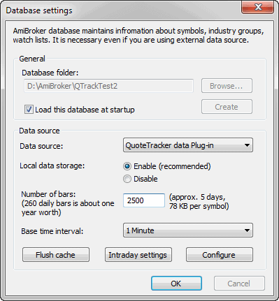
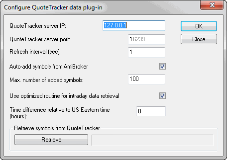

How to use AmiBroker with external data source (QuoteTracker)
IMPORTANT: You need QuoteTracker 2.4.9C or above (3.1.0 recommended).
It can operate on the standard edition, but AmiBroker RT is recommended.
VERY IMPORTANT: QuoteTracker has to be configured so that its internal
server is running. Click here for the explanation.
CAVEAT: QuoteTracker should be considered a poor man's
real-time substitute. Its performance cannot be compared to true real-time
feeds like eSignal or myTrack that offer very reliable, long backfills and
true tick-by-tick updates.
QuoteTracker plugin currently works in two modes:
daily mode - the plugin adds and updates the last (today's)
bar with the most recent quotes in nearly real time. It means that you
have to use it in conjunction with an already existing end-of-day database.
intraday mode - the plugin provides one day of intraday historical data.
More days can be accumulated if AmiBroker with QT is launched every day
so AmiBroker can save history to its local database.
One-time setup
Make sure that your QuoteTracker has the QT HTTP server enabled: Options->Edit
Preferences : Misc tab: HTTP Server Settings
If you are using an unregistered version of QuoteTracker, make sure you click
on ads often enough.
To use an external data source with AmiBroker, you will need to perform a
one-time setup described below:
Run AmiBroker.
Choose
File->New database.
Type a new folder name (for example: C:\Program Files\AmiBroker\NewData
) and click
Create as shown in the picture below:

Choose the appropriate entry from the Data source combo:
-
QuoteTracker users select "QuoteTracker
plug-in" as a Data Source and "Enable" from Local
data storage
Click the
Configure button to show the plugin configuration dialog
as shown below

You may also click the Retrieve button to pre-fill the AmiBroker database
with symbols already present in QuoteTracker. From now on, your AmiBroker
reads quotes from QuoteTracker in nearly real time.
To learn how to use AmiBroker in real-time mode, read this
tutorial article.
Description of QuoteTracker plugin configuration options
QT plugin configuration dialog looks as follows:
Here is a description of the settings:
QuoteTracker server port: defines the port on which the QT HTTP internal
server is visible. 16239 is the default value used by QuoteTracker, and you
should not change this in most cases. If in doubt, please check QuoteTracker
HTTP server settings: Options->Edit Preferences : Misc tab:
HTTP Server Settings
Refresh interval - defines how often AmiBroker will ask QT for
quotes. 5 seconds is the default. You may consider changing it to 10 or 15 seconds
in case you have lots of symbols and a slow machine
Auto-add symbols from AmiBroker - if this option is turned ON
(by default, it is), if you switch in AmiBroker to a symbol that is not
present in any QT portfolios, it will be automatically added to the default
QT portfolio. It also applies to any other kind of access (for example,
if you try to import symbols to AmiBroker and they do not exist in QT,
they will be added if this option is turned on). Switching it OFF disables
the auto-add feature.
Max. number of added symbols - defines the maximum number of symbols
that get added using the auto-add feature described above. This protects QuoteTracker
from becoming overloaded (AmiBroker can handle tens of thousands of symbols
with ease, but QuoteTracker cannot)
Use optimized routine for intraday data retrieval -
turning this on (default, recommended) significantly speeds up data retrieval
in intraday modes. If this option is enabled and AmiBroker already has partial intraday
data for today, AmiBroker asks QT just for a few last time and sales records
that occurred since the last update up to the current time. If this option is
disabled, AmiBroker always asks QT for time&sales records from the entire day.
Time difference relative to US Eastern time - the time
difference (in hours) between your local time and US Eastern time (EST).
This field is needed because QuoteTracker's server reports all times in
the EST time zone. This means that if you live in Australia, QuoteTracker will
report ASX quotes with the EST time zone, and they will be 15 hours off your
local time. While AmiBroker has the setting for shifting intraday
charts, and this is not a problem when running intraday mode, it becomes
a problem when using daily (EOD) mode because quotes reported by QuoteTracker
are one day off. This setting solves this as AmiBroker adds the number
of hours entered here to the time reported by QuoteTracker to get the valid
date of the quote in daily mode. This field is filled in with the difference
calculated using your Windows Time settings.
Retrieve symbols from QuoteTracker - pressing the "Retrieve" button
adds all symbols present in QuoteTracker to the AmiBroker symbol list.